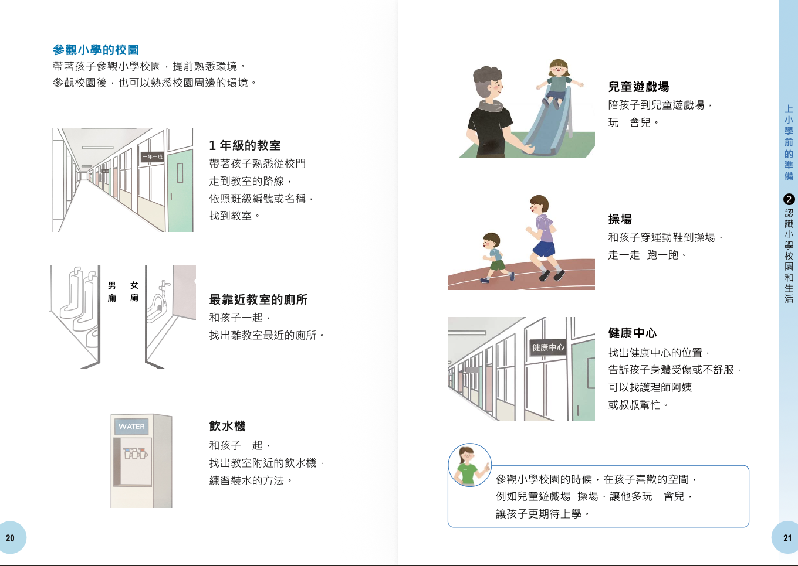
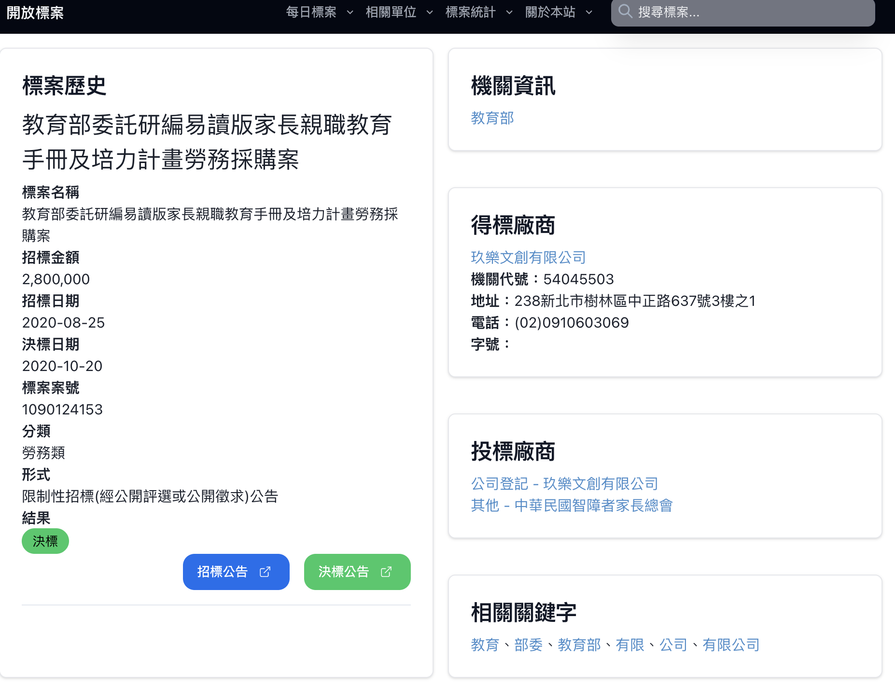

玖樂文創決定投標教育部親職教育手冊製作案。我入職半年，獨立主導提案企劃與簡報製作。競爭對手中華民國智障者家長總會連續數年得標（2018、2019 皆取得衛福部相關標案），是該領域長期壟斷的既有廠商。
觀察過去政府提供給長輩與身障者的手冊，發現共同問題：
這份手冊的使用者是身障父母——他們本身有認知或資訊處理上的障礙，卻需要理解複雜的親職相關法規。現有設計完全沒有考慮這個族群的閱讀需求。
標案規格中明確提到「易讀版」，但過去得標的設計仍停留在傳統手冊邏輯。我以此為切入點，以包容性設計為提案核心論述：
兩個讓我們與長年得標廠商拉開距離的要素：
證明執行能力，讓評委對「我們能做出來」有信心。
特教與社工顧問具名審查，讓提案不只是設計主張，而是有專業支撐的方案。設計方向定為：大字、圖解輔助、簡化用語，三者並用降低認知門檻。

手冊成品